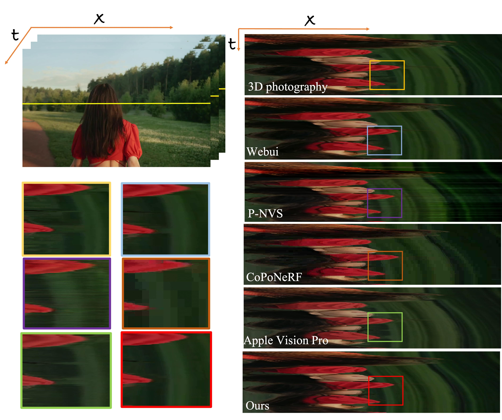
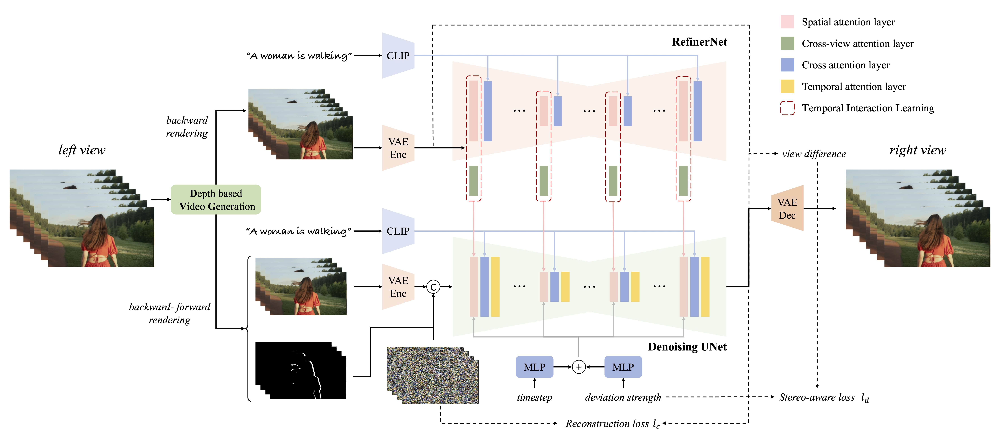

SpatialDreamer
Self-supervised Stereo Video Synthesis from Monocular Input
Brief Introduction
|  |
We introduce a novel self-supervised stereo video synthesis paradigm via a video diffusion model, termed SpatialDreamer. This approach addresses the challenge of lacking high-quality paired stereo videos for training and the difficulty of preserving spatio-temporal consistency across frames. Firstly, to address the stereo video data insufficiency, we propose a Depth based Video Generation module DVG, which employs a forward-backward rendering mechanism to generate paired videos with geometric and temporal priors. Leveraging data generated by DVG, we propose RefinerNet along with a self-supervised synthetic framework designed to facilitate efficient and dedicated training. More importantly, we devise a consistency control module, which consists of a metric of stereo deviation strength and a Temporal Interaction Learning module TIL for geometric and temporal consistency ensurance respectively. We evaluated the proposed method against various benchmark methods, with the results showcasing its superior performance.
Overview of SpatialDreamer
Given left view video, the target view video is rendered, encoded, and concatenated with multi-frame noise, followed by the denoising U-Net architecture (i.e., SVD). The reference view images are fed into RefinerNet, through which the spatial features are extracted. The temporal interaction learning module integrates the latent features from long-temporal frames, and the deviation strength is projected as positional embedding and added to the time step embedding. Finally, the variational autoencoder decoder decodes the result into a video clip.
Dataset Construction

DVG. The temporal motion can be utilized to refine the occluded regions in the current frame, thereby providing smoother images and more consistent occlusion in the temporal sequence.
More Demo: The Wandering Earth
[Click here to download Side by Side High-Resolution Video ↓]Citations
@article{2024spatialdreamer,
author = {Zhen Lv, Yangqi Long, Congzhentao Huang, Cao Li, Chengfei Lv*, Hao Ren and Dian Zheng},
title = {SpatialDreamer: Self-supervised Stereo Video Synthesis from Monocular Input},
journal = {arXiv preprint arXiv:2411.11934},
year = {2024}
}This page was built using the modification version of Academic Project Page Template from vinthony. You are free to borrow the of this website, we just ask that you link back to this page in the footer. This website is licensed under a Creative Commons Attribution-ShareAlike 4.0 International License.